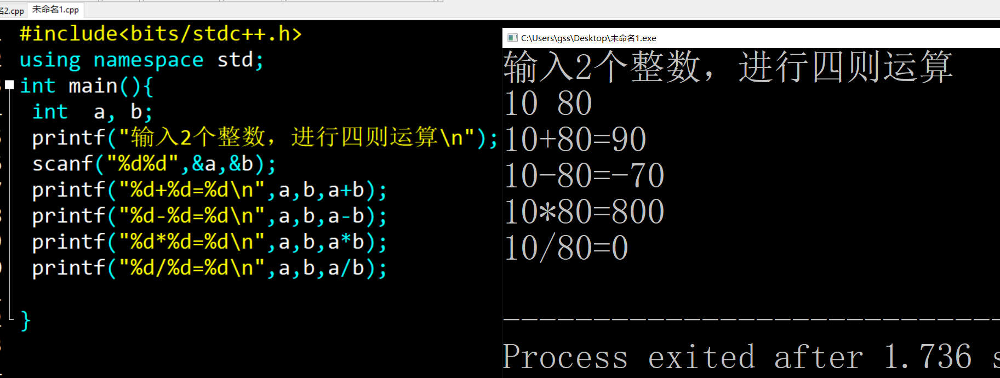
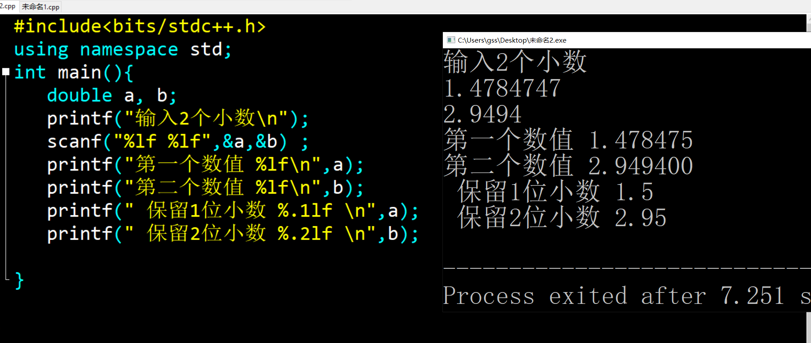
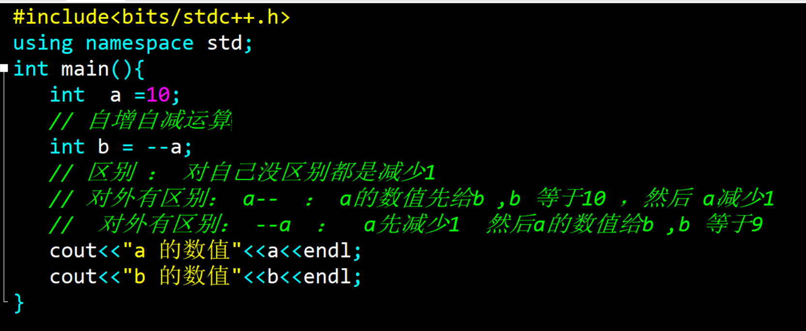
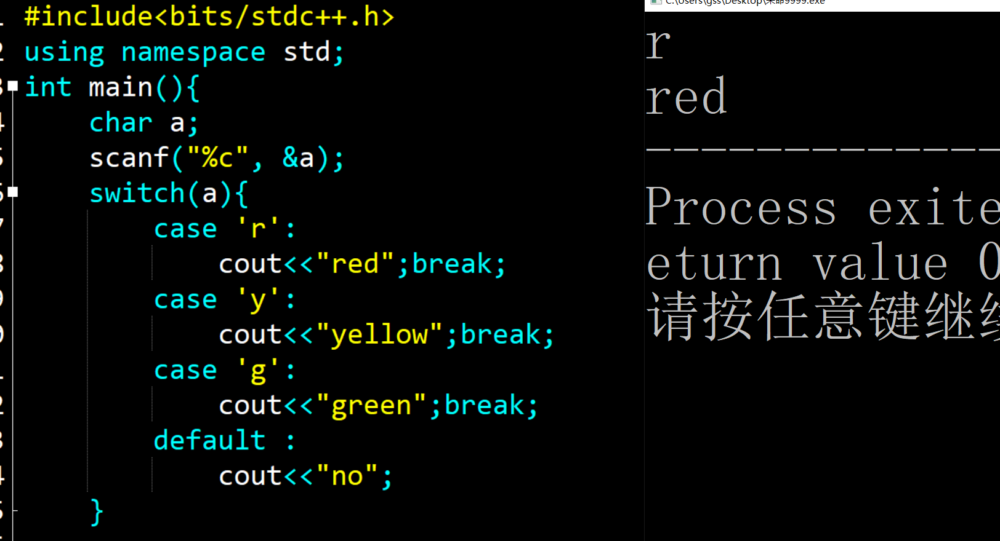
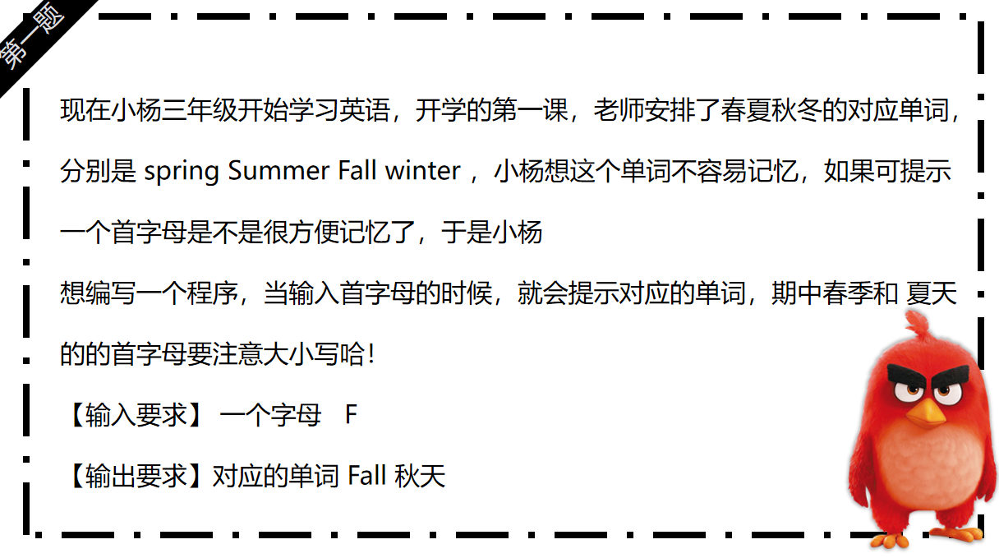
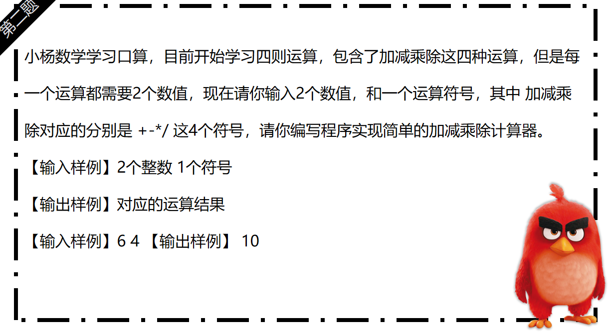
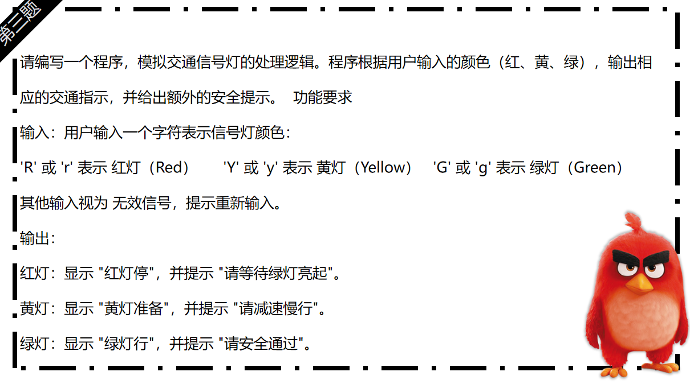

<!DOCTYPE html>
<html lang="zh-CN">
<head>
    <meta charset="UTF-8">
    <meta name="viewport" content="width=device-width, initial-scale=1.0">
    <title>预科C++学习阶段 - 课程重难点梳理</title>
    <style>
        * {
            margin: 0;
            padding: 0;
            box-sizing: border-box;
        }

        body {
            font-family: 'Microsoft YaHei', Arial, sans-serif;
            line-height: 1.6;
            background: linear-gradient(135deg, #6a11cb 0%, #2575fc 100%);
            color: #333;
            min-height: 100vh;
        }

        /* 导航栏 */
        nav {
            background-color: rgba(255, 255, 255, 0.1);
            backdrop-filter: blur(10px);
            padding: 15px 20px;
            display: flex;
            justify-content: space-between;
            align-items: center;
            position: relative;
            z-index: 10;
        }

        .nav-left {
            font-size: 18px;
            font-weight: bold;
            color: #fff;
            text-shadow: 0 2px 4px rgba(0,0,0,0.3);
        }

        .nav-right a {
            color: #fff;
            text-decoration: none;
            padding: 8px 15px;
            border-radius: 4px;
            transition: all 0.3s ease;
            text-shadow: 0 2px 4px rgba(0,0,0,0.3);
        }

        .nav-right a:hover {
            background-color: rgba(255, 255, 255, 0.2);
            transform: translateY(-2px);
        }

        /* 主内容区 */
        .main-content {
            max-width: 1000px;
            margin: 30px auto;
            padding: 0 20px;
            position: relative;
            z-index: 10;
        }

        /* 标题 */
        .title {
            text-align: center;
            margin-bottom: 40px;
            color: #fff;
            text-shadow: 0 2px 4px rgba(0,0,0,0);
        }

        .title h1 {
            font-size: 32px;
            margin-bottom: 10px;
            background: linear-gradient(45deg, #fff, #f0f0f0);
            -webkit-background-clip: text;
            -webkit-text-fill-color: transparent;
            background-clip: text;
        }

        /* 题目内容区域 */
        .topics {
            display: flex;
            flex-direction: column;
            gap: 30px;
        }

        .topic {
            background-color: rgba(255, 255, 255, 0.9);
            padding: 25px;
            border-radius: 8px;
            box-shadow: 0 2px 10px rgba(0, 0, 0, 0.1);
            transition: transform 0.3s ease;
        }

        .topic:hover {
            transform: translateY(-5px);
        }

        .topic h2 {
            color: #3498db;
            margin-bottom: 20px;
            padding-bottom: 10px;
            border-bottom: 1px solid #eee;
            font-size: 24px;
            transition: all 0.3s ease;
        }

        .topic h2:hover {
            background: linear-gradient(45deg, #ff7b00, #ff9500, #ffb84d);
            -webkit-background-clip: text;
            -webkit-text-fill-color: transparent;
            background-clip: text;
            cursor: pointer;
            text-shadow: 0 0 10px rgba(255, 149, 0, 0.5);
        }

        .topic ul {
            list-style-type: none;
        }

        .topic li {
            margin-bottom: 15px;
            padding-left: 25px;
            position: relative;
        }

        .topic li::before {
            content: "•";
            color: #3498db;
            font-weight: bold;
            position: absolute;
            left: 0;
        }

        .topic li strong {
            color: #2c3e50;
        }

        /* 代码图片展示区域 */
        .code-images {
            background-color: rgba(255, 255, 255, 0.95);
            padding: 25px;
            border-radius: 8px;
            box-shadow: 0 2px 10px rgba(0, 0, 0, 0.1);
            margin-top: 30px;
            text-align: center;
        }

        .code-images h2 {
            color: #3498db;
            margin-bottom: 15px;
        }

        .code-images p {
            color: #555;
            margin-bottom: 20px;
            font-size: 16px;
        }

        .image-container {
            margin-bottom: 25px;
            text-align: center;
            display: inline-block;
            max-width: 100%;
        }

        .image-container img {
            max-width: 100%;
            height: auto;
            border: 2px solid #ddd;
            border-radius: 8px;
            box-shadow: 0 2px 8px rgba(0, 0, 0, 0.1);
            background-color: #fafafa;
        }

        .image-container p {
            margin-top: 12px;
            font-size: 14px;
            color: #555;
            text-align: left;
            line-height: 1.6;
            background: #f9f9f9;
            padding: 12px;
            border-radius: 6px;
            border-left: 4px solid #3498db;
        }

        .image-container p strong {
            color: #2c3e50;
        }

        /* 响应式 */
        @media (max-width: 768px) {
            nav {
                flex-direction: column;
                gap: 15px;
                padding: 10px;
            }

            .nav-left {
                text-align: center;
            }

            .nav-right {
                display: flex;
                justify-content: center;
                gap: 10px;
                flex-wrap: wrap;
            }

            .main-content {
                margin: 20px 10px;
                padding: 0 10px;
            }

            .title h1 {
                font-size: 24px;
            }

            .topic {
                padding: 20px;
            }

            .topic h2 {
                font-size: 20px;
            }
        }
    </style>
</head>
<body>
    <!-- 导航栏 -->
    <nav>
        <div class="nav-left">预科学习阶段课程重难点梳理</div>
        <div class="nav-right">
            <a href="../网页主页面.html">首页</a>
			 <a href="../import.html">返回</a>
        </div>
    </nav>

    <!-- 主内容 -->
    <div class="main-content">
        <!-- 页面主标题 -->
        <div class="title">
            <h1>预科38课 GESP 练习</h1>
        </div>

        <!-- 题目部分：知识点、难点、练习 -->
        <div class="topics">
            <!-- 1. 知识点梳理 -->
            <div class="topic">
                <h2>知识点梳理内容</h2>
                <ul>
                    <li>
						 <strong>格式化输入输出</strong>  <br>
						 ： 1.使用scanf 和 printf 输入输出语句
				   </li>
                    <li>
						<strong>2.自增自减运算符号 </strong>： <br>
						1.数字本身都有增加数值 <br>
						2.前后关系区别
						<br>
					</li>
                    <li>
						<strong>switch语句 </strong>： <br>
						1.多分支语句练习 <br>
						2.break 语句终结程序 <br>
					</li>
                </ul>
            </div>

            <!-- 2. 重点难点解析 -->
            <div class="topic">
                <h2>重点难点解析</h2>
                <ul>
                    <li>
                    						 <strong>格式化数值</strong>： <br>
                    				1. scanf 格式化输出语句  scanf（"类型符号"，&a） <br>
									2. %d 表示整数类型 %lf 小数类型 %.2lf 保留2位小数 
                    </li>
                     <li>
                    						<strong>自增自减运算 </strong>： <br>
                    						1. 创造单一变量，里面进行数值的存储 <br>
											2.多个变量的创建，存储数值，内容输出！ <br>
                    					</li>
                     <li>
                    						<strong>多分支语句</strong>： <br>
                    						switch语句是一种多分支选择结构，允许根据一个表达式的值来执行不同的代码块。 <br>
											case 表示分支判断的情况 <br>
											注意 break 语句结束程序
                    					</li>
                </ul>
            </div>

            <!-- 3. 配套作业练习 -->
            <div class="topic">
                <h2>配套练习</h2>
                <ul>
                    <li><strong>基础语法练习1 </strong>: 格式化整数输入输出 </li>
                    <li><strong>基础语法练习2 </strong>：格式化小数输入输出 </li>
                    <li><strong>基础语法练习3</strong>：自增自减</li>
					 <li><strong>基础语法练习3</strong>：红绿灯程序</li>
                </ul>
            </div>
        </div>
		
	
	        <!-- 代码图片展示 & 详细说明部分 -->
	        <div class="code-images">
	            <h2>📸 参考代码与练习说明</h2>
	            <!-- 示例1：小明的成绩单  -->
	            <div class="image-container">
					<p>
					    <strong>【题目】</strong>使用scanf 和 printf 输入2个数值，计算2个数值的和差积商<br>
					    <strong>【思路】</strong> 创造2个整数变量 ，输入，输出结果， <br>
					    <strong>【关键代码】</strong> 无;<br>
					    <strong>【说明】</strong> 熟悉基本输入输出与算术运算。
					</p>
	                  
	            </div>
	
	            <!-- 示例2：格式化-->
	            <div class="image-container">
					<p>
					    <strong>【题目】</strong> 使用scanf 和 printf 输入2个小数数值，保留小数输出 <br>
					    <strong>【思路】</strong> 保留2位小数输出<br>
					    <strong>【关键代码】</strong> printf("%.2lf") <br>
					    <strong>【说明】</strong>无
					</p>
	                
	            </div>
	
	            <!-- 示例3：自增自减-->
	            <div class="image-container">
					<p>
					    <strong>【题目】</strong>创造整数变量a,存储数值10， 区别 a-- 和 --a <br>
					    <strong>【思路】</strong>  a--  ： a的数值先给b ,b 等于10 ，然后 a减少1  <br>
					    <strong>【关键代码】</strong> --a  ：  a先减少1  然后a的数值给b ,b 等于9<br>
					    <strong>【说明】</strong> 无
	
					</p>
	                 
	            </div>
			 <!-- 示例3：多分支-->
			 <div class="image-container">
			 	<p>
			 	    <strong>【题目】</strong> 现在小杨学习了英语单词，今天学习的是5以内的序列单词，今天的对应单词，数字1对应的 first  ，数字2对应的 second ，数字 3的对应 third ，数字 4的对应单词是 
fourth ，数字 5的对应单词 fifth【输入】输入1个数值，代表对应的数字
【输出】输出对应的序列单词
【输入样例】3
【输出样例】third
<br>
			 	    <strong>【思路】</strong> 创造1个变量，多分支判断 <br>
			 	    <strong>【关键代码】</strong> switch 语句，注意结束 ，<br>
			 	    <strong>【说明】</strong> 无
			 	
			 	</p>
			      
			 </div>
			 			
	        </div>
			
		<div class="topics">
			<div class="topic">
			    <h2>作业练习</h2>
			    <ul>
			        <li><strong>作业练习1 </strong>：英语单词</li>
			        <li><strong>作业练习2</strong>：计算器程序 </li>
			        <li><strong>作业练习3</strong>：红绿灯</li>
			    </ul>
			</div>
		</div>
		

			<div class="image-container">
			     
			</div>
			<div class="image-container">
			     
			</div>
			<div class="image-container">
			     
			</div>
			
		
		
    </div>
	
	
</body>
</html>